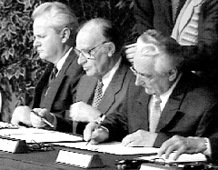

Faktaservice nr. 5 95/96, DESEMBER 1995
FREDSAVTALEN I BOSNIA:
Skjør fred krever samhold
Fredsavtalen som partene undertegnet under hardt amerikansk press, har ingen mulighet til å lykkes, uten massiv og vedvarende internasjonalt engasjement.

Fra venstre: Serbias president Slobodan Milosevic, Bosnias president Alija Izetbegovic og Kraotias president Franjo Tudjman undertegnet fredsavtalen i Dayton, Ohio, 21. november 1995.Freden fra Ohio er et komplisert puslespill, der bitene er presset på plass med stor kraft, og dermed egnet til å sprette opp igjen, så snart presset letter.
President Alija Izetbegovic var langtfra lykkelig over avtalen, som i praksis avgir halve republikken til serberne. Medlemmer av den bosnisk-serbiske delegasjon gikk fullstendig berserk, ifølge amerikanske diplomater, da Slobodan Milosevic til slutt viste dem kartene som fastlegger de nye skillelinjene. Serbias president blir en nøkkelmann når han nå skal overbevise sine landsmenn i Bosnia om å respektere avtalen, som i grove trekk ser slik ut:
- Bosnia-Hercegovina skal bevares som en stat innen sine nåværende grenser, men deles i to enheter. Den muslimsk-kroatiske føderasjon kontrollerer 51 prosent av territoriet, og den serbiske republikk de resterende 49.
- Det opprettes en sentralregjering, et presidentskap, en nasjonalforsamling med to kammer, grunnlovsdomstol og en sentralbank. Presidenskapet får tre medlemmer, en valgt fra den serbiske republikk og to fra den muslimsk-kroatiske føderasjon. De to landsdeler får hver sin egen president og lovgivende forsamlinger.
- Sentralregjeringen får ansvaret for utenrikspolitikk, utenrikshandel, toll, pengepolitikk og kommunikasjoner.
- Hovedstaden Sarajevo blir en forenet, åpen by innenfor den muslimsk-kroatiske føderasjon. Serberne beholder enkelte forsteder i øst.
- Enklaven Gorazde i Øst-Bosnia knyttes til den muslimske del via en land-korridor.
- Byen Brcko, som forbinder serbiske områder nord i Bosnia skal få sin status avgjort ved internasjonal megling innen et år.
- Alle utenlandske styrker, unntatt FN, må trekkes tilbake innen 30 dager. Bosnia får heretter to armeer, en serbisk og en muslimsk- kroatisk. Men de stridende parters egne styrker skal trekkes bak to kilometer brede våpenhvilelinjer. Innen 120 dager skal alle tunge våpen og styrker være på plass i sine forlegninger.
- En fredsbevarende styrke under NATO-kommando erstatter FNs styrker i Bosnia. Den får rett til å bruke makt, fri bevegelse i hele Bosnia, og skal arrestere krigsforbrytere. Avtalen avgjør ikke hva som skal skje med Radovan Karadzic og Ratko Mladic, de to serberledere som er anklaget for krigsforbrytelser.
Men personer som er tiltalt ved Haag-tribunalet, kan ikke velges til eller inneha offentlig verv. Partene lover å samarbeide med krigsforbryterdomstolen.
- Den sivile del av den internasjonale støtteoperasjon får blant annet sivilt FN-politi, valg - og menneskerettighetsobservatører fra den europeiske sikkerhetsorganisasjon OSSE, FNs høykommissær for flyktninger og andre hjelpeorganisasjoner.
- Det skal holdes frie valg både sentralt og lokalt i hver landsdel innen ni måneder etter at fredsavtalen er formelt undertegnet i Paris.
- Flyktninger og hjemløse har lovlig krav på å få sine hjem tilbake, eventuelt kreve økonomisk kompensasjon. Alle har stemmerett på sine opprinnelige hjemsteder.
- Det opprettes en kommisjon for menneskerettigheter, ledet av en ombudsmann. Den skal granske overgrep i alle deler av Bosnia, og partene er pålagt å respektere kommisjonens vedtak.
FNs reaksjon
FNs generalsekretær Boutros Boutros-Ghali uttrykte stor tilfredshet med utviklingen og sa at avtalen «gir oss håp om at freden nå kan bli virkelighet i de krigsherjede områdene i det tidligere Jugoslavia».Boutros-Ghali forsikret samtidig at verdensorganisasjonen «vil gjøre alt som står i dens makt, innen de mandater som gis av Sikkerhetsrådet» for å få slutt på lidelsene og gjenopprette normale tilstander.
FN hadde på det meste over 40 000 fredsbevarende soldater i det tidligere Jugoslavia. Omkring halvparten av disse ventes å forbli i Bosnia inntil en ny styrke under ledelse av NATO er på plass for å sette ut i livet den fredsavtalen som nå er inngått.
Kilder, alle artikler om eks-Jugoslavia: New York Times, Ulf Andenæs og Aasmund Willersrud, Aftenposten
[Innhold] [Info] [Aftenposten hjemmeside] [Til Fakta hovedside]